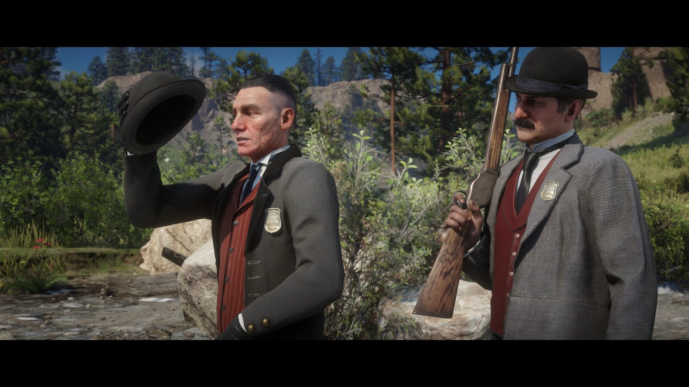
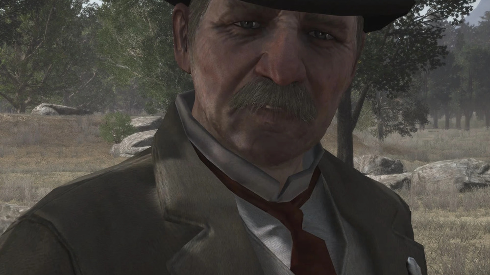
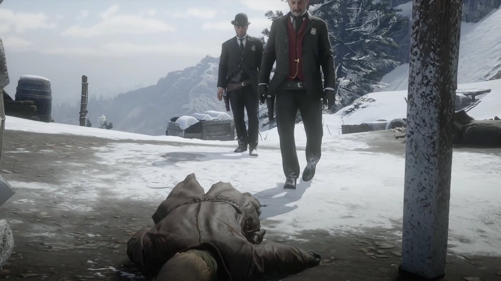

Personnage · Red Dead Redemption
Edgar Ross
Edgar Ross est un agent fédéral du Bureau of Investigation et l'antagoniste principal du premier Red Dead Redemption. En 1911, il force John Marston à traquer son ancien gang en retenant en otage la femme et le fils de ce dernier.
Une fois que John a accompli tout ce qu'on lui demandait, le gouvernement le trahit : Ross mène le raid au cours duquel John est tué. Trois ans plus tard, le fils de John le venge.
- Mort
- 1914
- Statut
- Décédé
- Nationalité
- Américaine
- Affiliation
- Bureau of Investigation
- Rôle
- Agent fédéral
- Jeux
- Red Dead Redemption, Red Dead Redemption 2
Biographie
Le chantage sur John Marston
En 1911, Ross et le Bureau placent Abigail et Jack Marston en détention pour contraindre John à traquer ses anciens complices : Bill Williamson, Javier Escuella et Dutch van der Linde. John mène à bien cette sinistre liste en échange de la liberté de sa famille.
Trahison et vengeance
Plutôt que de laisser John en paix, Ross mène un raid de l'armée sur le ranch des Marston, à Beecher's Hope, où John est abattu. En 1914, un Jack Marston devenu adulte retrouve Ross, désormais à la retraite, et le tue, refermant l'histoire.
Personnalité
Ross est pragmatique, manipulateur et sans remords, un homme qui présente la cruauté comme le prix du progrès et de l'ordre. Il incarne la foi du nouveau siècle dans la puissance de l'État.
Relations

John Marston
Le hors-la-loi repenti qu'il fait chanter puis trahit, la victime centrale de la quête d'ordre de Ross.

Jack Marston
Le fils de John, qui, devenu adulte, retrouve Ross et le tue en 1914.

Dutch van der Linde
L'ancien chef de gang et l'une des cibles que Ross envoie John traquer.
Mort et destin
Edgar Ross est tué par Jack Marston en 1914, abattu en duel au bord d'une rivière. Sa mort est l'acte final du premier Red Dead Redemption.
Coulisses
Ross est l'antagoniste central de Red Dead Redemption (2010) et apparaît brièvement dans Red Dead Redemption 2 (2018) en jeune agent du Bureau. Il est, à dessein, l'une des figures les plus détestées de la série.
Anecdotes
- Il travaille pour le Bureau of Investigation, ancêtre du FBI.
- Il force John Marston à traquer Bill Williamson, Javier Escuella et Dutch.
- Il est tué par Jack Marston en 1914.
Galerie
